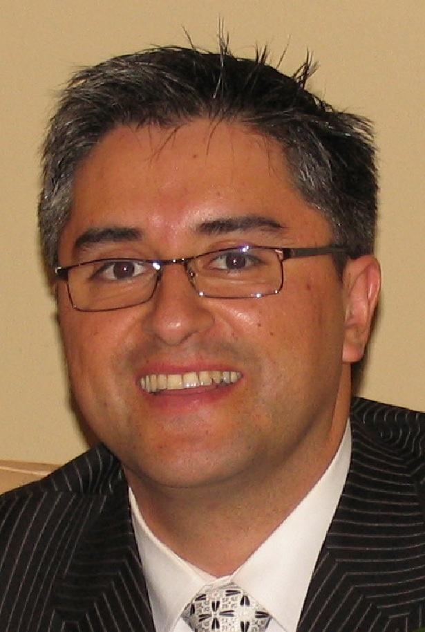
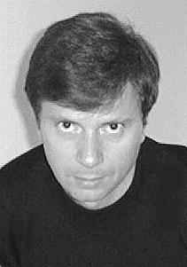
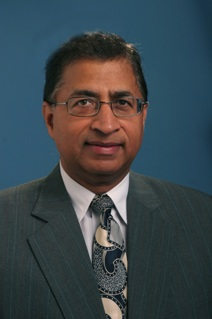

First IEEE Workshop on
Camera Networks and Wide-Area Scene Analysis
20 June 2011
Crowne Plaza, Colorado Springs, CO, USA
Co-located with CVPR 2011.
Keynote Speakers
 |
Rene VidalJohn Hopkins University |
Distributed Algorithms for Camera Sensor Networks |
|
Abstract:Recent hardware innovations have produced low-power, embedded computers equipped with small cameras, which can be organized into wireless camera sensor networks. These new technologies provide a tremendous opportunity to devise new applications at the intersection of computer vision and sensor networks. However, such applications pose a number of fundamental challenges to the state-of-the-art. On the one hand, traditional computer vision are centralized and require computational resources not available in a camera sensor network. On the other hand, traditional sensor networks techniques have been developed to solve only simple problems, such as averaging. They are not designed to deal with the presence outliers and non-linear data, which are common in computer vision applications. In this talk we will show how existing algorithms can be combined and extended to provide robust distributed solutions for computer vision applications in camera sensor networks. |
|
Bio:Professor Vidal received his B.S. degree in Electrical Engineering (highest honors) from the Pontificia Universidad Catolica de Chile in 1997 and his M.S. and Ph.D. degrees in Electrical Engineering and Computer Sciences from the University of California at Berkeley in 2000 and 2003, respectively. He was a research fellow at theNational ICT Australia in 2003 and joined The Johns Hopkins University in 2004 as a faculty member in the Department of Biomedical Engineering and the Center for Imaging Science. Dr. Vidal was co-editor (with Anders Heyden and Yi Ma) of the book ``Dynamical Vision" and has co-authored more than 100 articles in biomedical image analysis, computer vision, machine learning, hybrid systems, and robotics. Dr. Vidal is Associate Editor of the Journal of Mathematical Imaging and Vision, and was a program chair for WMVC 2009, PSIVT 2007 and area chair for CVPR 2005 and ICCV 2007. Dr. Vidal is recipient of the 2009 ONR Young Investigator Award, the2009 Sloan Research Fellowship, the 2005 NFS CAREER Award and the 2004 Best Paper Award Honorable Mention (with Prof. Yi Ma) for his work on "A Unified Algebraic Approach to 2-D and 3-D Motion Segmentation" presented at the European Conference on Computer Vision. He also received the 2004 Sakrison Memorial Prize for "completing an exceptionally documented piece of research", the 2003 Eli Jury award for "outstanding achievement in the area of Systems, Communications, Control, or Signal Processing", the 2002 Student Continuation Award from NASA Ames, the 1998 Marcos Orrego Puelma Award from the Institute of Engineers of Chile, and the 1997 Award of the School of Engineering of the Pontificia Universidad Catolica de Chile to the best graduating student of the school. He is a member of the IEEE and the ACM. |
|
 |
Demetri TerzopoulosUniversity of California, Los Angeles |
Virtual Vision: Computer Vision in Virtual Reality |
|
Abstract:Realistic virtual worlds can serve as software laboratories within which vision researchers may prolifically develop and evaluate sophisticated, active machine perception systems. This unorthodox "Virtual Vision" paradigm is posited at the intersection of the fields of computer vision and computer graphics such that virtual reality can subserve computer vision research. A consequence of this paradigm, upon which I will focus in this talk, is our recent work on the rapid development and evaluation of distributed smart camera sensor networks and intelligent surveillance systems capable of persistent human observation in large-scale, visually realistic virtual environments populated by autonomous virtual humans. |
|
Bio:Demetri Terzopoulos (PhD '84 MIT) is the Chancellor's Professor of Computer Science at the University of California, Los Angeles. He is a Guggenheim Fellow, a Fellow of the ACM, IEEE and Royal Society of Canada, and a Member of the European Academy of Sciences. Among his many awards are an Academy Award for Technical Achievement from the Academy of Motion Picture Arts and Sciences for his pioneering work on physics-based computer animation, and the inaugural Computer Vision Significant Researcher Award from the IEEE for his pioneering and sustained research on deformable models and their applications. One of the most highly cited authors in engineering and computer science according to ISI and other indexes, his publications include more than 300 research papers and several volumes, primarily in computer graphics, computer vision, medical imaging, computer-aided design, and artificial intelligence/life. (http://www.cs.ucla.edu/~dt) |
|
 |
Bir BhanuUniversity of California, Riverside |
Human Recognition in a Distributed Video Network |
|
Abstract:Video network is an emerging interdisciplinary field with significant and exciting scientific and technological challenges and a great promise in solving many real-world problems. Starting with the recent progress in developing real-world wireless video networks and using them for anomaly detection and human detection, tracking and recognition, this talk will present techniques and examples for human recognition at a distance in video. |
|
Bio:Dr. Bhanu is the Distinguished Professor of Electrical Engineering and Cooperative Professor of Computer Science and Engineering, Mechanical Engineering and Bioengineering, Director of the Center for Research in Intelligent Systems (CRIS) and the Visualization and Intelligent Systems Laboratory (VISLab) at the University of California, Riverside (UCR). Dr. Bhanu was the Founding Faculty of the Bourns College of Engineering and the Founding Chair of Electrical Engineering at UCR (1991-94). Current Dr. Bhanu also serves as the Director of NSF IGERT program on Video Bioinformatics. Prior to joining UCR, Dr. Bhanu was Senior Honeywell Fellow at Honeywell Inc. Dr. Bhanu has been on the faculty of the Department of Computer Science, University of Utah, and has worked with Ford Aerospace & Communications Corporation, INRIA-France and IBM San Jose Research Laboratory. Dr. Bhanu has been the principal investigator of various programs from NSF, DARPA, NASA, AFOSR, ONR, ARO and other agencies and industries in the areas of object/target recognition, learning and vision, image understanding, image and video databases and machine vision applications. |
|